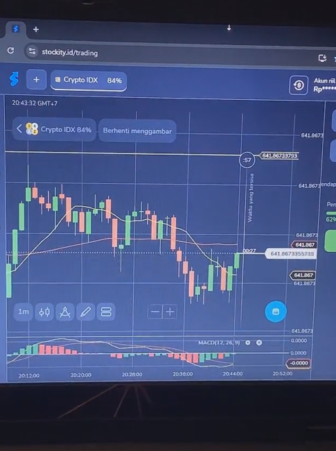
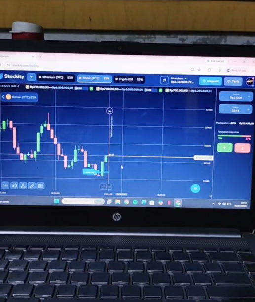

4. Взаимодействие с аудиторией

Хороший стример:
- Приветствует новых зрителей
- Отвечает на вопросы
- Объясняет свои действия
- Удерживает внимание зрителей
- Общается со зрителями во время ожидания
Перед началом теста ознакомьтесь с примерами хороших LIVE-стримов и требованиями к проведению тестового эфира.
Цель этого теста - помочь вам понять, как проходит рабочий процесс стримера, подготовиться к тестовому эфиру и показать свой лучший результат.


Хороший стример:
Перед началом:
Длительность теста: 5 минут